The Component Graph panel provides an outline of a selected component in the 3D world, including component nodes, behaviors, properties and features.
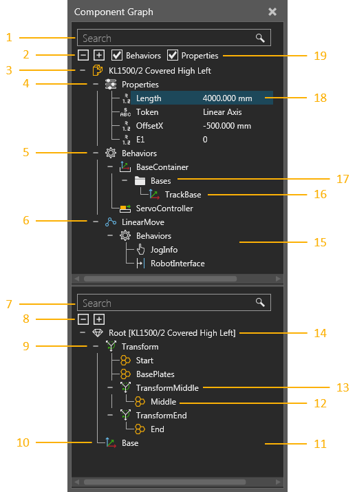
| 1. | Search Box for Component Node Tree |
| 2. | Expand Options for Component Node Tree |
| 3. | Root Node of Selected Component |
| 4. | Component Properties |
| 5. | Node Behaviors |
| 6. | Child Node (Link) and Joint |
| 7. | Search Box for Node Feature Tree |
| 8. | Expand Options for Node Feature Tree |
| 9. | Feature Tree |
| 10. | Frame Feature |
| 11. | Node Feature Tree pane |
| 12. | Subfeature of Operation |
| 13. | Operation Type Feature |
| 14. | Root Feature of Active Node |
| 15. | Component Node Tree pane |
| 16. | Behavior Sub-element Item |
| 17. | Behavior Sub-element |
| 18. | Selected Item in Component |
| 19. | Filters of Component Node Tree |
The structure of a component is a tree containing nodes. At the top of the tree is the root node of a component, which contains component properties. Other nodes are linked together and formed under the root node. Each node contains its own collection of behaviors, which are listed with a node in the tree. Some behaviors have sub-elements that perform special actions or contain other elements. For example, some behaviors have ports that allow the internal and external transfer of components between behaviors, whereas other behaviors have containers for other types of data. With the exception of the root node, each node defines its own joint, offset and mechanism for movement using the Properties panel.
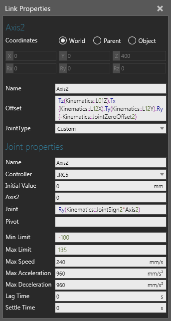
Component properties can be referenced within the scope of a component to assign values and write expressions. This allows you to make the geometry of a node and other properties parametric. Behavior properties that have unique names can also be referenced by using this syntax, <BehaviorName>::<BehaviorProperty>. Additional joint properties are added to a node when its joint is assigned to a controller.
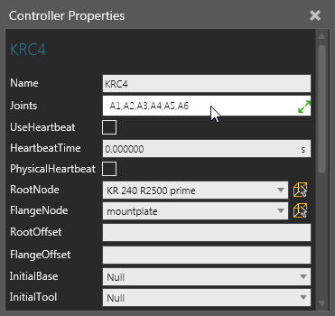
When the node structure of a component is visualized in the 3D world, a node offset and its degree of freedom is shown as a rig that forms the skeleton of a component. A node is made interactive by its joint properties, so when the joint of a node is defined you can use the Interact command to jog and interact with that joint.
Nodes in a component can be attached to one another by dragging a node onto another node in the Component Node Tree pane. This will move the node and its hierarchy, including behaviors and features.
Tip: When moving a node or feature in the Component Graph panel, you can hold down SHIFT to retain its 3D world position.
The geometry of a selected node will be highlighted blue in the 3D world. Generally, the node structure of a component is defined before splitting and moving geometry into those nodes. Another approach is to use extraction for forming new nodes with selected geometry.
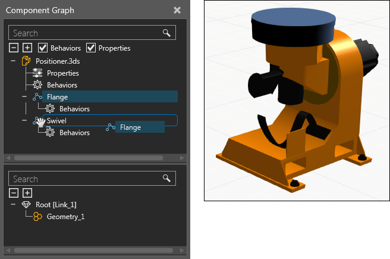
Note: The Move mode of the Modeling view will not affect the attachment of nodes to different nodes. Move mode is used for controlling whether or not the hierarchy of a selected object moves with the object in the 3D world.
Behaviors in a component can reference and connect to one another and do not need to be contained in the same node. Some behaviors are used to add functionality to another behavior or need to be used with other behaviors in order to perform tasks. For example, sensors can be connected to a path and use signals to notify other behaviors when triggered by a component moving on that path.
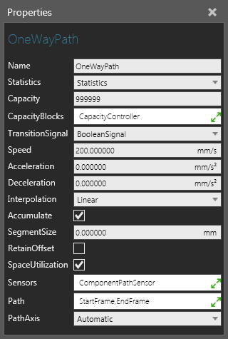
If you want to connect behaviors in a component to behaviors in another component, use interfaces. An interface is a type of connector that can connect to one or many other connectors. In order to form a connection between two interfaces, they must be compatible and have available ports. That is, the section and fields of the interfaces must match up with one another and support the connection. A section is like an electrical plug and its fields are like the pins of that plug. Any number of sections can be used to support different types of connections. The order and types of fields used in a section are important since they define the logic of the connector. For example, you can connect the output of a path in one component to the input of a path in a different component. If you were to do this internally, you would use the port sub-elements of flow type behaviors.
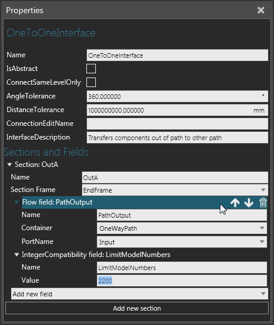
For components to physically connect to one another, their interfaces must plug into one another at a point in both components, which is defined by the SectionFrame property of each interface. For components to remotely connect to one another, their interfaces must be abstract or virtual, which is defined by the IsAbstract property of each interface.
Note: The PnP command is used for handling the plug and play of components, for example a conveyor line and end-of-arm tool mounted on a robot. The Show Interfaces command is used for displaying connection editors that can wire up abstract interfaces, for example external axis components and digital signals remotely connected to a robot.
The geometry of a node is a tree containing features. At the top of the tree is the root feature of a node. Other features can be linked together and formed under the root feature. That is, each feature in a tree is evaluated, and then passed to its parent until finally reaching the root feature of a node. This is how an operation type feature is applied: its subfeatures are evaluted, and then affected by the operation, and finally passed to the parent of the operation type feature.
Feature tree evaluation is an important modeling concept and is illustrated in the following example. A Block feature is added to a node, transformed along the X-axis, and then transformed around the Z-axis relative to the operation, thereby using a radius and angle to manipulate the location of the Block. Next, the Block is cloned along the X-axis of an operation, and then extruded along the Y-axis of another operation. Finally, the Node Origin frame and hierarchy the Block belongs to is passed to the Root feature of its node.
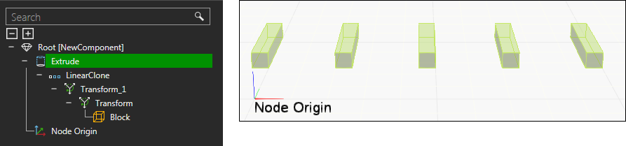
Primitive type features are simple shapes, whereas a Geometry feature is a container of either collapsed or imported geometry. Any type of feature can be collapsed into and formed as a Geometry feature. In this form, geometry can be edited directly and regrouped into different Geometry features. The geometry of a selected feature and its subfeatures are highlighted green and olive respectively in the 3D world.
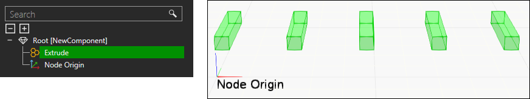
A feature can be moved to a different node in a component by dragging the feature from the Node Feature Tree pane onto a node listed in the Component Node Tree pane. This will move the feature and its hierarchy to the node. By default, a feature will retain its location, but you can press and hold SHIFT when dragging a feature in order for the offset of a node to affect the feature's location. Likewise, features and nodes can be extracted to form new nodes and components.
Note: The Move mode of the Modeling view will not affect the movement of features to different nodes. Move mode is used for controlling whether or not the hierarchy of a selected object moves with the object in the 3D world.
When you select a property in the Component Node Tree, a Property task pane is displayed and is used to edit that property. Depending on the type of property, you can set constraints by using a dash (-) for a min and max range, a semi-colon (;) for a set of values, and a line break for each string of characters. The name of property can be used to generate a property tab in the Component Properties panel. The syntax is <tabname::propertyname> and the tab will be displayed if at least one property using that tab name is visible and not hidden in a component.
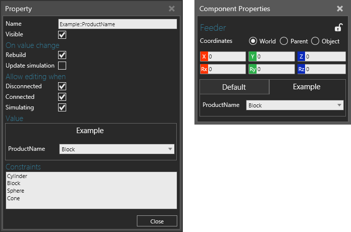
Component properties can be referenced within the scope of a component to assign values and write expressions. This allows you to make the geometry of a node and other properties parametric. Depending on the type of property, you can assign a quantity and unit prefix to a property, which will automatically be based on the global Unit Family setting.
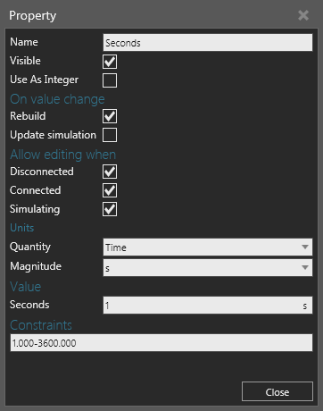
In some cases, you may want to form your own units or calculations using Expression properties, which are generally hidden and/or referenced in a read-only property that can display the calculated value of the expression.
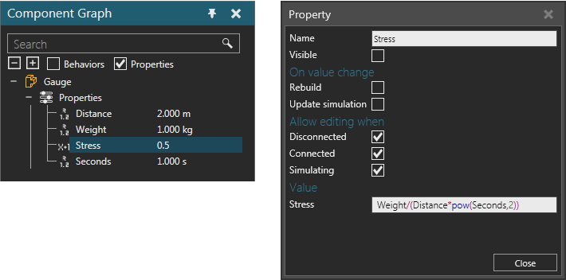